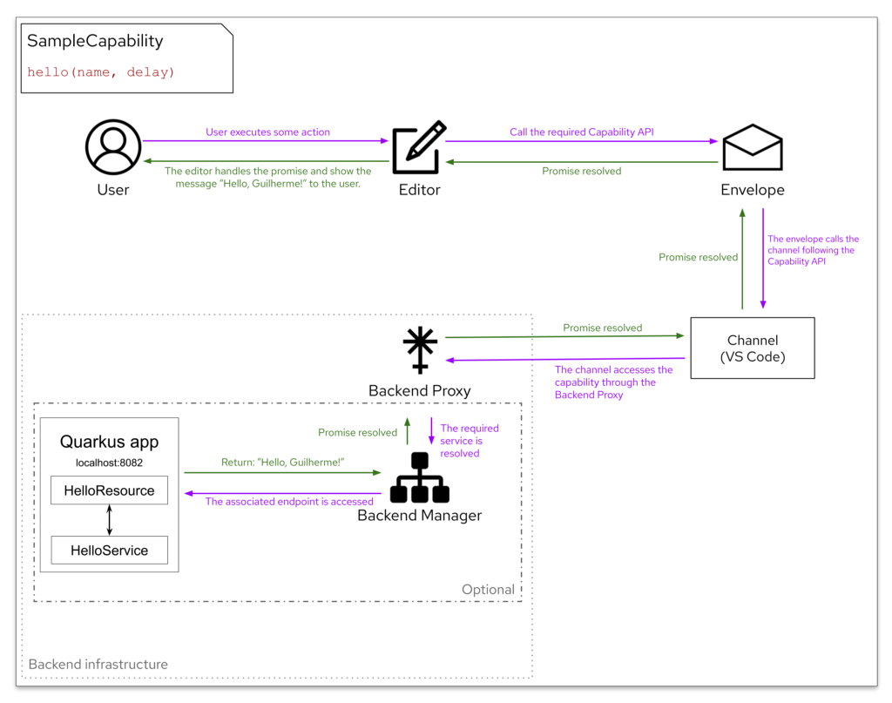

Backend support on Kogito Tooling
Developers can now augment the capabilities of their editors by connecting backend services through an infrastructure that has been included in Kogito Tooling.
Lots of possibilities of executing code outside the client are enabled/facilitated with this new infrastructure, such as calling a java local backend service, reaching an HTTP endpoint, triggering a command in the terminal, to name a few.
Let’s check out how it works in this post.

Introduction
Backend package
A new typescript package named backend has just been integrated into the Kogito Tooling repository. Composed of a number of sub-modules, this package provides a mechanism for connecting editors to backend services. This package is divided as follows:
- api: Core infrastructure for supporting backend services. All generic API is defined in this sub-module, such as BackendManagerService, BackendProxy, and core related abstractions.
- channel-api: This sub-module should include all backend related APIs that channels can support.
- http-bridge: Bridge implementations between channels and HTTP services. Required for channels supporting such communication. A simple bridge would just bypass the requests whereas a more elaborated strategy could, for example, enqueue the requests, thus having more control over them.
- i18n: Internationalization for backend related features.
- node: Common backend related implementations that target NodeJS.
- vscode: Common backend related implementations that specifically target the VS Code channel. The VS Code API can be used on this sub-module to extend generic services and their capabilities.
Since it is the first iteration of this effort, evolving the infrastructure is expected and encouraged as new services/requirements are being accommodated.
Kogito tooling java repository
A new repository has been created aiming at including java related code with Kogito Tooling. The main idea for having this repository is gathering all the backend services written in java.
The first project pushed into this new repository is a Quarkus app named kogito-extended-services-quarkus, which is part of the infrastructure and basically works as a router for java backend services compatible with Quarkus. In other words, it is only a matter of exposing a REST endpoint that calls the java service to make it available to be accessed by the channels.
Finally, Github actions have been configured to automatically build the code and publish snapshot versions into the Maven central repository on a daily basis. Pull requests also trigger a build workflow.
Typescript infrastructure for channels
The core interfaces of the architecture are Service and Capability. All services are controlled by a backend manager and all capabilities are resolved (and possibly accessed if available) by a backend proxy. There are also some convenient implementations for HTTP services. Let’s check each one of these components in the sections that follow.
Service
A service has its own life cycle, which is controlled by the infrastructure. In other words, the infrastructure starts and stops the services, usually when the service is required the first time and when a channel is stopped, respectively.
Developers can define what should be done when the service starts, stops, and how to check if their requirements are satisfied — if the requirements are not met, the service cannot be started up.
In addition, a service can optionally expose operations to channels through a Capability. The channels, by themselves, can either directly access the capabilities or bridge the communication between editors and services through the envelope.
Capability
A capability is simply an API associated with a service that is implemented and used by channels. The implementation can be either common among channels or distinct ones, depending mostly on the environment.
For example, a capability for doing a particular data processing task could be implemented by using the user’s machine in the case of Desktop and VS Code channels, whereas it could be implemented by accessing some HTTP endpoint in the case of the Online channel. In the end, the implementation is irrelevant for the infrastructure as long as the API is followed by the channels.
Moreover, all API methods provided by a capability should wrap their return in a CapabilityResponse object, which includes a CapabilityResponseStatus. This way, callers of the capability can handle the response in a better way in certain situations, such as the infrastructure or the service itself not being available.
Backend manager service
The backend manager service controls the life cycle of all services. It is supposed to be started up along with the channel and be stopped right before the channel is closed. In the case of the VS Code channel, for example, the backend manager is started up once the extension is activated and stopped when the extension is deactivated (usually right before the VS Code is closed).
The backend manager also provides a mechanism to register both bootstrap and lazy services. If a service needs to be available as soon as the manager is up, then such a service should be registered as a bootstrap service. Conversely, if a service could be started up on the first usage, then such a service should be registered as a lazy service. Finally, all registered services are stopped as soon as the backend manager is stopped.
Backend proxy
The backend proxy simply bridges the access between channels and backend services. Since backend services are optional and/or could be unavailable if their requirements are not satisfied, the backend proxy takes care of resolving the required service, thus letting channels focusing only on the logic of the capability instead of having to deal with service resolving code.
Built-in HTTP services
Services implementing capabilities that require accessing HTTP endpoints can extend the built-in abstract services HttpService or LocalHttpService, which are located in the api sub-module. As the names suggest, the former is meant for any endpoint while the latter is meant for local endpoints that live on the Quarkus app.
Both provide the execute method, which can be used to execute HTTP requests. The only difference between them is the given endpoint:
- Services extending HttpService need to provide a full URL, e.g. http://myserver.com/myservice;
- Since the port of the local Quarkus app is resolved by the infrastructure, services extending LocalHttpService need to provide only the relative endpoint, e.g. /myservice. Behind the scenes, the infrastructure will execute a request on http://localhost:<port>/myservice.
VS Code extension for backend services
Considering that VS Code is the target channel for the first iteration of the backend services infrastructure, a new VS Code extension named vscode-extension-backend has been added into Kogito Tooling. It already includes a basic set up to support the backend manager and Quarkus app, and should register all services associated with VS Code.
This way, backend services on VS Code become optional for users, i.e., the capabilities of the editors can be augmented only if users choose to install the backend extension.
Examples
Now, let’s take a look at some examples running on the VS Code channel to illustrate services and capabilities.
Quarkus local app: Being part of the infrastructure, this service has the sole purpose of starting up the Quarkus app through a java jar command. It does not offer any capabilities for channels. Instead, HTTP endpoints can be exposed inside the Quarkus app to be accessed by channels through other capabilities.
Thus, the life cycle implementations of this service would contain:
- start: run the java jar command to start up the Quarkus app process.
- stop: kill the active process associated with the Quarkus app.
- satisfyRequirements: Possible requirements are (i) check if the jar file of the Quarkus app exists; (ii) check if java 11+ is available; (iii) find an available port. If these conditions are met, then the service can startup.

Test scenario runner: This sample service has the sole purpose of running a mvn clean test command on a project that contains test scenario files (.scesim), and reporting back the obtained results. Moreover, triggering the command should be done by channels.
Thus, the life cycle implementations of this service would contain:
- start: nothing is necessary to be done on the start phase since the command will be triggered by channels.
- stop: kill the active process associated with the test execution.
- satisfyRequirements: Possible requirements are (i) check if java 11+ is available; (ii) check if maven 3.6.2+ is available. If these conditions are met, then the service can startup.
Since the execution of this service should be triggered by channels, a capability must be associated with the service, which defines a basic API to both trigger and cancel the execution of the test scenarios.
Quarkus dev runner: This sample service has the sole purpose of running a mvn clean compile quarkus:dev command on a Quarkus project. Similar to the Test scenario runner, triggering the command should be done by channels.
Thus, the life cycle implementations of this service would contain:
- start: nothing is necessary to be done on the start phase since the command will be triggered by channels.
- stop: kill the active process associated with the Quarkus dev execution.
- satisfyRequirements: Possible requirements are (i) check if the given project is compatible with Quarkus; (ii) check if java 11+ is available; (iii) check if maven 3.6.2+ is available. If these conditions are met, then the service can startup.
Since the execution of this service should be triggered by channels, a capability must be associated with the service, which defines a basic API to both trigger and cancel the execution of the Quarkus dev.
Keep in mind that the examples above use NodeJS code to execute the operations on the terminal. As mentioned, services can also reach HTTP endpoints, enabling code in other languages to be run, such as java.
Round trip service sample
Now that we’ve learned about the concepts of the backend services infrastructure, let’s inspect another sample that is meant to establish a communication between the editor and a simple java service. With this sample, we will see how a round trip would be done, starting with the editor and going all the way to a java service.
The java service that will play a part in this sample will simply return a greeting for a given name after a given delay, like Hello, Guilherme!. The intention with the delay is to show that services can take some time to process requests and that’s fine because all the communication is based on promises. Notice that, wherever the flow starts, the associated promise must be handled at some point, either on the channel or in the editor.
The target channel on this sample will be the VS Code, but the same capability implementation could be shared with the Desktop channel. In practice, both channels would be using the local Quarkus app for reaching the java service. On the other hand, Chrome and Online channels would require a slightly different approach to accomplish the same goal, such as having the Quarkus app deployed on some remote server.
Workflow
The workflow of this example will be done as follows:
- Starting with some action of the user, the editor calls an API available on the envelope with args name=”Guilherme”, delay=5000. This means that the java service will wait 5000 ms (5 seconds) to return the response;
- The envelope calls the channel following the associated capability API;
- The channel accesses the capability through the backend proxy, which resolves the required service with the backend manager;
- The java service is then accessed through its REST endpoint in the Quarkus app;
- The java service waits for 5s and then return the response containing the string Hello, Guilherme!;
- The resolved promise is passed back all the way to the editor;
- The editor handles the response.
The following diagram summarizes the steps above.

Note: If we draw the workflow of the example services that we’ve seen earlier on this post, like the Test Scenario Runner, the User would be directly connected with the channel since the editor and the envelope do not participate in the flow. Also, the backend manager would access a pure NodeJS service, instead of reaching the Quarkus app.
Implementation
Now, let’s see how we would implement this sample service — code snippets will be provided for the most relevant parts.
Step 1: Capability API The first step is to define the capability API so all the code can follow. As we’ve seen on the diagram above, the API for this sample service will contain only one method: hello(name, delay). Step 2: Quarkus service (Java) The second step is to create the java code that will do all the hard work. Remember that the java code must live on the kogito-tooling-java repository, which is picked up by the building process of the backend VS Code extension. To get started, the SampleService.java (omitted) is a simple interface that defines our hello method, and, as discussed, the actual implementation should wait for the given delay and then return the response. Here’s how it could be implemented:
| package org.kie.kogito.extended.services.quarkus.sample; | |
| import javax.enterprise.context.ApplicationScoped; | |
| @ApplicationScoped | |
| public class SampleServiceImpl implements SampleService { | |
| @Override | |
| public String hello(final String name, int delay) { | |
| if (delay > 0) { | |
| try { | |
| Thread.sleep(delay); | |
| } catch (InterruptedException e) { | |
| e.printStackTrace(); | |
| } | |
| } | |
| return "Hello, " + name + "!"; | |
| } | |
| } |
| package org.kie.kogito.extended.services.quarkus.sample; | |
| import javax.inject.Inject; | |
| import javax.ws.rs.Consumes; | |
| import javax.ws.rs.POST; | |
| import javax.ws.rs.Path; | |
| import javax.ws.rs.Produces; | |
| import javax.ws.rs.core.MediaType; | |
| import javax.ws.rs.core.Response; | |
| @Path("/sample") | |
| public class SampleResource { | |
| @Inject | |
| SampleService sampleService; | |
| @POST | |
| @Consumes(MediaType.APPLICATION_JSON) | |
| @Produces(MediaType.APPLICATION_JSON) | |
| public Response hello(final HelloRequest request) { | |
| final String message = sampleService.hello(request.getName(), request.getDelay()); | |
| return Response.ok(new HelloResponse(message)).build(); | |
| } | |
| } |
| package org.appformer.kogito.bridge.client.capability.sample; | |
| import elemental2.promise.Promise; | |
| import org.appformer.kogito.bridge.client.capability.CapabilityResponse; | |
| /** | |
| * Sample capability. | |
| */ | |
| public interface SampleCapability { | |
| /** | |
| * Sample method that returns a greeting with the given name after a given delay. | |
| * | |
| * @param name The person's name. | |
| * @param delay The time in ms for delaying the response. | |
| * @return A greeting after the delay. | |
| */ | |
| Promise<CapabilityResponse<String>> hello(String name, int delay); | |
| } |
| SampleServiceWrapper.get().hello("Guilherme", 5000).then((CapabilityResponse<String> response) -> { | |
| // Sample – capability not available can be handled like this. | |
| if (CapabilityResponseStatus.withName(response.getStatus()) == CapabilityResponseStatus.NOT_AVAILABLE) { | |
| DomGlobal.console.info(response.getMessage()); | |
| } | |
| // Sample – response completed can be handled like this. | |
| if (CapabilityResponseStatus.withName(response.getStatus()) == CapabilityResponseStatus.OK) { | |
| DomGlobal.console.info(response.getBody()); | |
| } | |
| return null; | |
| }).catch_(error -> { | |
| DomGlobal.console.error("Error caught: " + error); | |
| return null; | |
| }); |